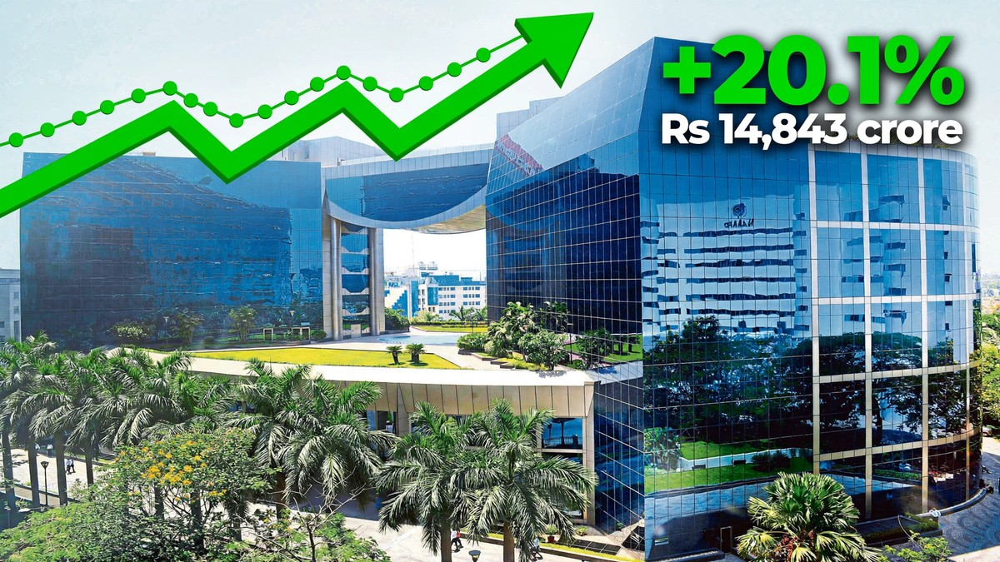

ICICI Bank profit jumps 20% as loans and interest income grow
ICICI Bank reported a 20.1% rise in second-quarter net profit to Rs 14,843 crore, helped by strong loan growth and higher interest income, even as its lending margin slipped.

Sources: The Economic Times, Business Standard
ICICI Bank, India’s second-largest private lender, reported a 20.1 percent year-on-year rise in standalone net profit to Rs 14,843 crore for the July to September quarter of FY27. A year earlier, the bank had reported a profit of Rs 12,359 crore. The results were announced on Saturday and filed with the stock exchanges.
Read More
Net interest income, the difference between the interest the bank earns and the interest it pays, rose 17.7 percent to Rs 25,339 crore, up from Rs 21,529 crore a year earlier. Core operating profit rose 21.8 percent to Rs 20,805 crore. But net interest margin, a key measure of lending profitability, slipped to 4.18 percent, down from 4.30 percent a year earlier and 4.36 percent in the previous quarter.
The bank’s total loan portfolio grew 30 percent to Rs 18.32 lakh crore by the end of September. Leaving out loans against foreign currency deposits raised through a special Reserve Bank facility, loan growth was 24.1 percent. Total deposits grew 27.1 percent to Rs 20.49 lakh crore, or 17 percent without those foreign currency deposits.
Asset quality improved during the quarter. The gross non-performing asset ratio fell to 1.20 percent, from 1.58 percent a year earlier and 1.38 percent in the previous quarter. The net NPA ratio fell to 0.30 percent from 0.39 percent a year earlier. Provisions fell to Rs 851 crore from Rs 914 crore, and the bank continued to hold Rs 13,100 crore in contingency provisions. Its capital adequacy ratio stood at 16.68 percent, with a Common Equity Tier 1 ratio of 16.01 percent.
On a consolidated basis, ICICI Bank reported a net profit of Rs 16,333 crore for the quarter, up about 22.3 percent from Rs 13,357 crore a year earlier. Consolidated total assets grew 22.6 percent to Rs 32.93 lakh crore. Fee income rose 20.1 percent to Rs 7,795 crore, with about 75 percent of fees coming from retail, rural and business banking customers.
More Business news: Business News.
What People Say
Comments are being collected. No comments yet on checked posts.
 US stocks fall again as tech sell-off deepens and oil prices surge
US stocks fall again as tech sell-off deepens and oil prices surge TSMC profit jumps 69% to a record as AI chip demand stays strong
TSMC profit jumps 69% to a record as AI chip demand stays strong Cost to insure CoreWeave debt jumps past 1,000 points as AI debt worries grow
Cost to insure CoreWeave debt jumps past 1,000 points as AI debt worries grow